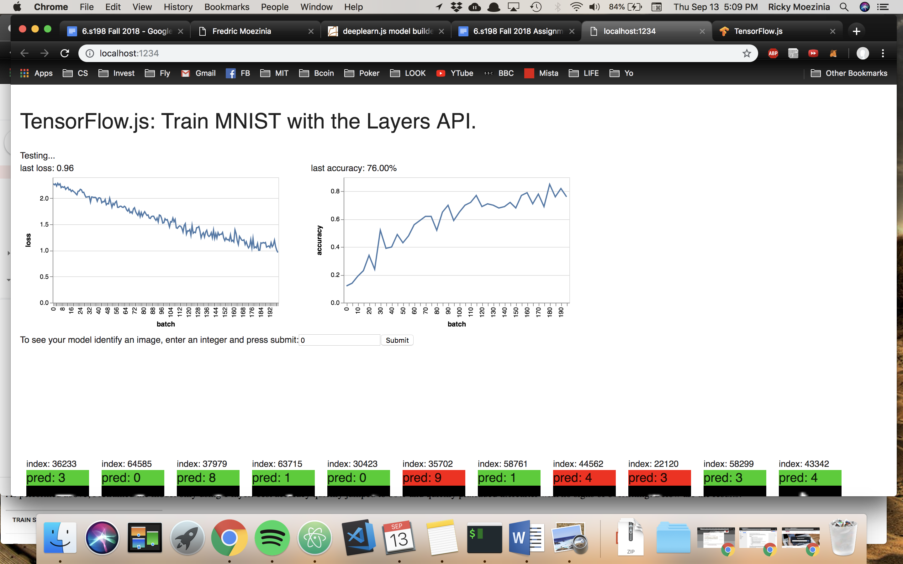

Part 1: The classifications are almost always wrong since the network has randomized weights, and has not been trained yet therefore we expect the inferences to be wrong most of the time.
With MNSIT: The test accuracy is 80% and the training accuracy is 89%. The demo performs 1080 inferences per second. It trains 1480 examples per second.
With Fashion MNIST: The test accuracy is 73% and the training accuracy is 76%. The demo performs 1200 inferences per second. It trains 1250 examples per second. After a minute and a half of training on CIFAR, test accuracy is only 24% and trainig 42%.
If we add a new FC layer to the model, the accuracy plummets and Nan% is shown. This is because of integer overflow, due to the exploding gradient problem where backprop repeatedly multiplies gradients by numbers greater than 1 so gradients grow exponentially large. This is happening since there is no activation function yet.
The accuracy is fairly low when there are 10 FC units, however when I increase this first layer to 100 units, the test accuracy more than doubles from 29% to 77% after 5000 examples trained.
Below are the training stats for models with 1 to 5 layers. The 1 layer model works far better than the others as the test accuracy is substantially higher. The 3 layer model is next best, but generally the more layers the worse the accuracy of the model. Perhaps this is overcomplication of the model since there end up being too many edges in the net.
However, the training accuracy is never that much higher than the test accuracy which shows that it is not a problem of overfitting. Perhaps I did not train the models for long enough (only 5000 examples). However, after running the 3 layer model for minutes, I still did not see a big discrepancy between testing and trainig accuracy (see below).
With the first layer fatter (100 compared to 10), the test and trainig accuracy are high; 92/93% respectively. Next I retrained the model using the same 3 FC layers, however now setting the second layer to 100 units (so 10 -> 100 -> 10). Test accuracy jumped around 35%, and seemed to plateau around 60%. This was much worse, perhaps because there is no added value (or information gained) in adding a much fatter layer (100 vs 10) deeper in the neural net after a more narrow neck. For Fashion MNIST and CIFAR: the results were similar, with slight improvements using more layers, but I encoured more variation to test accuracy which were indicative of overfitting. with Fashion_MNIST: Test accuracy went from 76% (1 layer) through 79% for 3 layers (best) and then down to 73% for 5 layers where training accuracy seems to elapse test accuracy by a more significant margin. With CIFAR: a wider first layer also gave more than 90% accuracy and more layers and a wider lower layer led to lower accuracy in general.
With batch size at 20, and number of batches at 50, the average last loss is 1.91. With batch size at 80, the last loss is 1.86. With the batch number at 100, the last loss is much lower - 1.65. When both are set higher (80, 100) at the same time, the loss is 1.58. These are all rounded averages over 4 runs, and show that an increase in batch size and number lower the loss since more examples are being trained in the model. A smaller batch size will make log loss jump around as the updates end up overfitting to a smaller number of images.
There are some examples of the classification where the system does poorly; namely, it finds difficulty in classifying 7s and 1s. This is probably because the [28, 28, 3] tensor representing the image is too general for the model to learn the intricacies of a 1 and 7 since they look quite similar. With batch size 100 and number 500, the log loss eventually drops down to 0.7 and accuracy up to around 85%, though there are in fact still errors in random images. With batch size 10, and number 5000 (so equal number of examples are trained) we see similar results as log loss trends downwards to 0.7 and accuracy jumping around 80/90/100% due to overfitting.
Here, I implemented a 3 layer model, with leakyReLU in between each layer. The model is fatter at the front and becomes slimmer (with 120 then 50 then 10 units). Both batch size and number are 100 and 200 respectively.
